Day 28｜PostgreSQL 資料誤刪如何復原？使用 pgBackRest、WAL Archive 與 PITR 回到指定時間點
對應文章：Day 28｜PostgreSQL 資料誤刪如何復原？使用 pgBackRest、WAL Archive 與 PITR 回到指定時間點
本日建立 backup01 專用 Repository Host，完成 Full Backup、WAL Archive 與獨立 Restore VM 的 Point-in-Time Recovery。禁止直接在運作中的 Patroni Cluster 上覆寫還原。
本日操作順序
- 在 PVE Web UI 建立 backup01 與 Repository Disk，先確認底層 Storage 空間再配置容量。
- 依序在 backup01、pg01、pg02、pg03 安裝相同版本的 pgBackRest。
- 只在 backup01 建立 Repository Account、目錄與 Server Config。
- 逐台在 pg01、pg02、pg03 建立 Database Host Config 與 SSH 存取。
- 在 DCS 寫入一次 Patroni Archive 設定；先逐台重啟 Replica，再計畫性切換並重啟舊 Leader。
- 只在 backup01 建立 Stanza、執行 Full Backup 並驗證 WAL Archive。
- 在目前 Leader 建立並誤刪測試資料，記錄精確時間。
- 另外建立 Restore VM 做 PITR，不可直接還原到正在運作的 pg01～pg03。
1. 建立 backup01
操作位置：PVE Web UI 建立 VM。作業系統內的磁碟與網路設定只在 backup01。
加入 Repository Disk 前，先在 pve01 Shell 執行：
pvesm status
lvs -a -o lv_name,lv_size,data_percent,metadata_percent
若 local-lvm 剩餘不足 20%，先停止本節，檢查不再使用的 ISO、Backup、Snapshot 與 Test Clone，不要繼續超額分配。
確認容量後建立 VM：
- 左側選 Day 06 的 Debian 13 Template。
- 右上角按
More→Clone。 Target Node選pve01。VM ID填261。Name填backup01。Mode選Full Clone。Target Storage選 pve01 的local-lvm。- 按
Clone，等待 Task 顯示OK。 - 選 VM 261 →
Hardware→Processors→Edit。 - Sockets 填
1、Cores 填2，按OK。 - 選
Memory→Edit，Memory 填2048 MiB，取消 Ballooning，按OK。 - 選
Network Device (net0)→Edit。 - Bridge 選
vmbr1、VLAN Tag 填40、Model 選VirtIO、Firewall 勾選，按OK。 - 選
Cloud-Init，User 填labadmin，Password 填 Lab 管理密碼。 - 點
IP Config (net0)→Edit，IPv4 選Static。 - IPv4/CIDR 填
10.77.40.11/24，Gateway 填10.77.40.1，按OK。 - DNS Domain 填
lab.home，DNS Server 填10.77.40.1，按Regenerate Image。 - 到
Hardware→Add→Hard Disk。 - Bus／Device 選
SCSI，Storage 選 pve01 的local-lvm，Disk size 填32 GiB。 - 勾選
Discard與IO thread，按Add。 - 到
Options→Start at boot→Edit，勾選後按OK。 - 按
Start，再開啟Console。
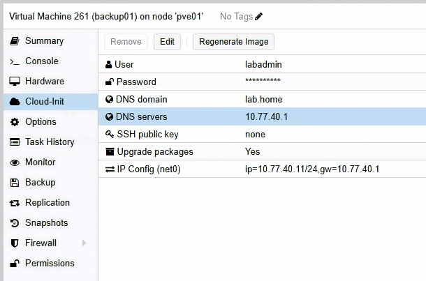
圖（一）backup01 使用 VLAN 40、固定 IP 10.77.40.11/24、閘道與 DNS 10.77.40.1。
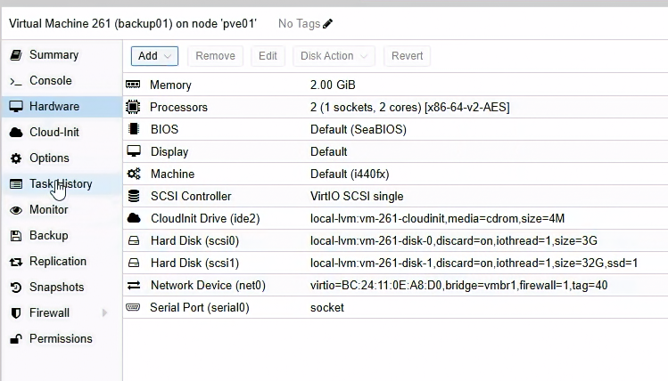
圖（二）backup01 配置 2 vCPU、2 GiB 記憶體、3 GiB 系統磁碟與 32 GiB Repository 磁碟。
開機後先執行：
hostnamectl --static
ip -br address
ip route
resolvectl status
resolvectl query deb.debian.org
sudo lsblk -o NAME,SIZE,TYPE,FSTYPE,MOUNTPOINTS,MODEL
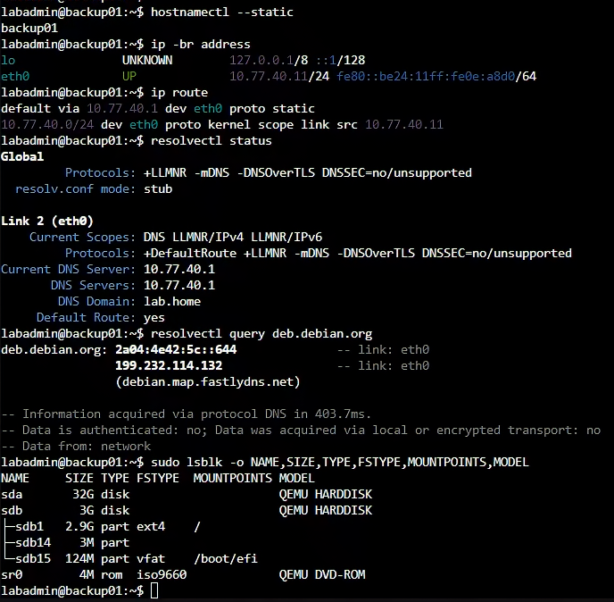
圖（三）backup01 已載入預定網路設定，lsblk 顯示 32 GiB 空白 Repository 磁碟為 /dev/sda。
resolvectl status 必須在 Global 或網路介面區塊看到 DNS Server 10.77.40.1 與 DNS Domain lab.home。如果 Cloud-Init 已設定 IP 與預設閘道，systemd-resolved 卻沒有取得這兩項，執行：
sudo install -d -m 0755 /etc/systemd/resolved.conf.d
printf '%s\n' \
'[Resolve]' \
'DNS=10.77.40.1' \
'Domains=lab.home' |
sudo tee /etc/systemd/resolved.conf.d/10-lab-dns.conf
sudo systemctl restart systemd-resolved
sudo resolvectl flush-caches
resolvectl status
resolvectl query deb.debian.org
deb.debian.org 成功只代表對外 DNS 正常。Day 20 的 pg01～03.lab.home 使用各節點的固定 Hosts 清單，尚未建立成 OPNsense Host Override，因此新建的 backup01 還要加入三台 PostgreSQL 節點的固定名稱。
先備份並開啟 Cloud-Init 使用的 Hosts Template：
sudo cp -a /etc/cloud/templates/hosts.debian.tmpl \
/etc/cloud/templates/hosts.debian.tmpl.before-day28
sudo nano /etc/cloud/templates/hosts.debian.tmpl
在檔案末端加入：
10.77.30.11 pg01.lab.home pg01
10.77.30.12 pg02.lab.home pg02
10.77.30.13 pg03.lab.home pg03
按 Ctrl+O、Enter、Ctrl+X，再將相同三行加入目前正在使用的 /etc/hosts：
sudo nano /etc/hosts
完成後驗證：
for host in pg01.lab.home pg02.lab.home pg03.lab.home; do
getent ahostsv4 "$host" | head -n 1
done
結果必須依序顯示 10.77.30.11、10.77.30.12、10.77.30.13。不要直接修改 /etc/resolv.conf；它是 systemd-resolved 管理的 Stub Resolver 設定。
以下指令假設 32 GiB 空白 Repository Disk 是 /dev/sda。如 lsblk 顯示不同名稱，後續所有 /dev/sda 都要改成實際空白磁碟；不能只根據名稱猜測。
確認空白磁碟後建立檔案系統：
sudo lsblk -o NAME,SIZE,FSTYPE,MOUNTPOINTS
sudo wipefs -n /dev/sda
sudo mkfs.ext4 -L pgrepo /dev/sda
sudo mkdir -p /var/lib/pgbackrest
grep -q '^LABEL=pgrepo /var/lib/pgbackrest ' /etc/fstab || \
echo 'LABEL=pgrepo /var/lib/pgbackrest ext4 defaults,noatime 0 2' | \
sudo tee -a /etc/fstab
sudo systemctl daemon-reload
sudo findmnt --verify --verbose
sudo mount -a
findmnt /var/lib/pgbackrest
df -hT /var/lib/pgbackrest
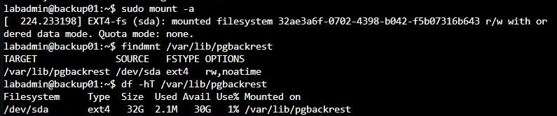
圖（四）/dev/sda 已以 ext4 掛載至 /var/lib/pgbackrest，可用容量約 30 GiB。
2. 逐台安裝相同版本 pgBackRest
操作順序：backup01 → pg01 → pg02 → pg03。每台安裝後立即確認版本完全相同。
backup01、pg01～03 都使用 PGDG Repository：
sudo apt update
sudo apt install -y postgresql-common ca-certificates curl
sudo /usr/share/postgresql-common/pgdg/apt.postgresql.org.sh
sudo apt update
sudo apt install -y pgbackrest openssh-client openssh-server
sudo systemctl enable --now ssh
pgbackrest version
四台的 pgBackRest 版本必須完全一致。保存：
apt-cache policy pgbackrest
3. 建立 Repository 帳號
操作節點：只在 backup01。
backup01：
sudo useradd --system --create-home --home-dir /var/lib/pgbackrest --shell /bin/bash pgbackrest
sudo chown -R pgbackrest:pgbackrest /var/lib/pgbackrest
sudo chmod 750 /var/lib/pgbackrest
sudo install -d -m 700 -o pgbackrest -g pgbackrest /var/lib/pgbackrest/.ssh
建立兩個方向的專用 SSH Key：
Repository → pg01～03：執行備份時讀取 Primary／Standby
pg01～03 postgres → Repository：archive-push 與 restore 存取 Repository
OPNsense 只允許 PG_NODES 與 BACKUP_NODE 間必要的 TCP 22。正式部署還應在 authorized_keys 加入 Forced Command，以及 no-agent-forwarding、no-port-forwarding、no-X11-forwarding 等限制，讓服務帳號金鑰只能執行必要的 pgBackRest 遠端命令。本篇先保留容易觀察與排錯的 Lab 設定。
3.1 建立 backup01 到三台 PG 的 Key
操作節點：只在 backup01。
sudo -u pgbackrest ssh-keygen -t ed25519 \
-f /var/lib/pgbackrest/.ssh/id_ed25519 \
-C 'pgbackrest@backup01' -N ''
sudo -u pgbackrest cat /var/lib/pgbackrest/.ssh/id_ed25519.pub
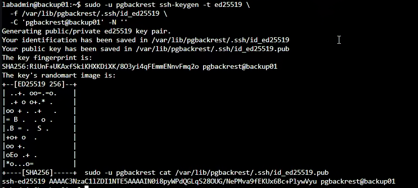
圖（五）backup01 以 pgbackrest 帳號建立專用 Ed25519 金鑰，後續只分發 Public Key。
複製整行 Public Key，不要複製沒有 .pub 的 Private Key。
操作節點：pg01、pg02、pg03 逐台執行。
sudo -u postgres install -d -m 700 /var/lib/postgresql/.ssh
sudo -u postgres nano /var/lib/postgresql/.ssh/authorized_keys
在每一台貼上剛才的同一行 Public Key，按 Ctrl+O、Enter、Ctrl+X，再執行：
sudo chown -R postgres:postgres /var/lib/postgresql/.ssh
sudo chmod 700 /var/lib/postgresql/.ssh
sudo chmod 600 /var/lib/postgresql/.ssh/authorized_keys
3.2 建立三台 PG 到 backup01 的 Key
操作節點：pg01、pg02、pg03。每台都建立自己的 Key，不複製 Private Key。
sudo -u postgres ssh-keygen -t ed25519 \
-f /var/lib/postgresql/.ssh/id_ed25519 \
-C "postgres@$(hostname -s)" -N ''
sudo -u postgres cat /var/lib/postgresql/.ssh/id_ed25519.pub
每次複製當前節點的 Public Key。到 backup01 開啟：
sudo -u pgbackrest nano /var/lib/pgbackrest/.ssh/authorized_keys
將 pg01、pg02、pg03 的三行 Public Key 各貼一行，按 Ctrl+O、Enter、Ctrl+X，再執行：
sudo chown -R pgbackrest:pgbackrest /var/lib/pgbackrest/.ssh
sudo chmod 700 /var/lib/pgbackrest/.ssh
sudo chmod 600 /var/lib/pgbackrest/.ssh/authorized_keys
3.3 放行並驗證 SSH 路徑
操作位置：OPNsense Web UI。
- 進入
Firewall→Rules。 - 按
Add，Interface 選LAB_INTERNAL、Action 選Pass、Version 選IPv4、Protocol 選TCP。 - Source 選
PG_NODES、Destination 選BACKUP_NODE、Destination Port 填22。 - Description 填
PG nodes to pgBackRest repository，按Save。 - 再按
Add，Interface 選LAB_INTERNAL、Action 選Pass、Version 選IPv4、Protocol 選TCP。 - Source 選
BACKUP_NODE、Destination 選PG_NODES、Destination Port 填22。 - Description 填
pgBackRest repository to PG nodes，按Save。 - 將兩條 Allow Rule 都移到
Block LAB_INTERNAL to internal networks上方。 - 按頁面上方
Apply。
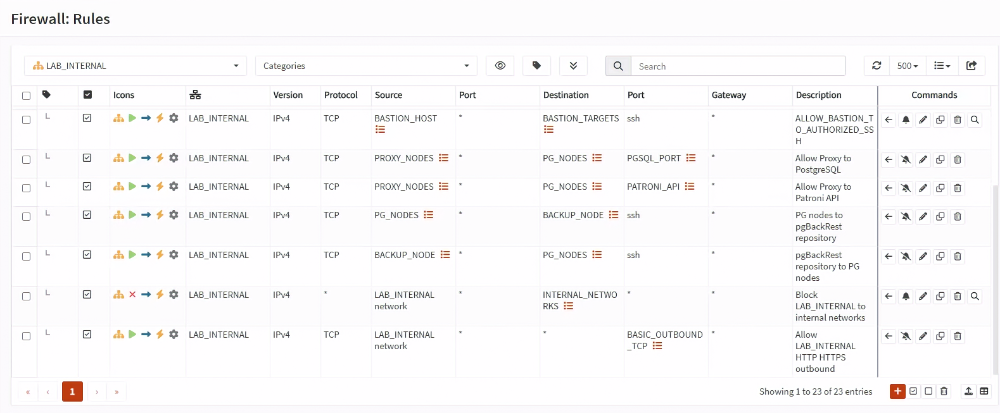
圖（六）兩條 SSH 規則位於跨 VLAN Block 上方，分別允許 PG_NODES 到 BACKUP_NODE，以及 BACKUP_NODE 到 PG_NODES。
兩條規則都要使用 LAB_INTERNAL，不要分別建立在 Database 或 Backup 個別 Interface。Day 14 的跨 VLAN Block 位於 LAB_INTERNAL Interface Group；Group Rule 會先於個別 Interface Rule 評估，因此建立在個別介面的 Allow 無法越過前面的 Group Block。
在 backup01 逐一建立 Known Hosts 並測試：
sudo -u pgbackrest ssh-keyscan -H pg01.lab.home pg02.lab.home pg03.lab.home \
| sudo -u pgbackrest tee /var/lib/pgbackrest/.ssh/known_hosts
sudo -u pgbackrest ssh postgres@pg01.lab.home 'hostnamectl --static'
sudo -u pgbackrest ssh postgres@pg02.lab.home 'hostnamectl --static'
sudo -u pgbackrest ssh postgres@pg03.lab.home 'hostnamectl --static'
正式環境要先從 PVE Console 或資產管理資料比對 SSH Host Key Fingerprint，不能只依賴第一次 ssh-keyscan。
在 pg01、pg02、pg03 各自執行：
sudo -u postgres ssh-keyscan -H backup01.lab.home \
| sudo -u postgres tee /var/lib/postgresql/.ssh/known_hosts
sudo -u postgres ssh pgbackrest@backup01.lab.home 'hostnamectl --static'
4. Repository Host Config
操作節點：只在 backup01。
backup01 開啟設定檔：
sudo install -d -m 755 /etc/pgbackrest
sudo nano /etc/pgbackrest/pgbackrest.conf
貼上：
[iron-pg]
pg1-host=pg01.lab.home
pg1-host-user=postgres
pg1-path=/var/lib/postgresql/18/patroni
pg2-host=pg02.lab.home
pg2-host-user=postgres
pg2-path=/var/lib/postgresql/18/patroni
pg3-host=pg03.lab.home
pg3-host-user=postgres
pg3-path=/var/lib/postgresql/18/patroni
[global]
repo1-path=/var/lib/pgbackrest/repo
repo1-retention-full=2
repo1-retention-diff=4
start-fast=y
process-max=2
log-level-console=info
log-level-file=detail
repo1-retention-full=2 保留兩份 Full；repo1-retention-diff=4 的計數包含 Full，代表四個 Full／Differential 備份集合的計數範圍。
按 Ctrl+O、Enter、Ctrl+X 儲存，再執行：
sudo install -d -m 750 -o pgbackrest -g pgbackrest /var/lib/pgbackrest/repo /var/log/pgbackrest
sudo chown root:pgbackrest /etc/pgbackrest/pgbackrest.conf
sudo chmod 640 /etc/pgbackrest/pgbackrest.conf
sudo -u pgbackrest pgbackrest --config=/etc/pgbackrest/pgbackrest.conf help >/dev/null
5. Database Host Config
操作節點：pg01、pg02、pg03。逐台設定並各自測試連到 backup01。
pg01～03 逐台開啟：
sudo install -d -m 755 /etc/pgbackrest
sudo nano /etc/pgbackrest/pgbackrest.conf
三台都貼上：
[iron-pg]
pg1-path=/var/lib/postgresql/18/patroni
[global]
repo1-host=backup01.lab.home
repo1-host-user=pgbackrest
repo1-path=/var/lib/pgbackrest/repo
process-max=2
log-level-console=info
pg1-path 提供預設還原位置；本次演練會在 Restore 命令使用 --pg1-path 覆寫為專用的 day28-proof-* 目錄，讓每次還原彼此隔離。
按 Ctrl+O、Enter、Ctrl+X 儲存，再執行：
sudo chown root:postgres /etc/pgbackrest/pgbackrest.conf
sudo chmod 640 /etc/pgbackrest/pgbackrest.conf
sudo -u postgres pgbackrest --config=/etc/pgbackrest/pgbackrest.conf help >/dev/null
6. Patroni 啟用 Archive
操作順序：先逐台處理 Replica，確認它重新加入後再處理下一台。Leader 最後處理，必要時先 Planned Switchover。
edit-config 只需在任一台目前正常運作的 Patroni 節點執行一次，不要在三台重複操作。這是儲存在 DCS 的 Cluster Dynamic Configuration，套用後三台成員都會讀到相同設定。執行完整命令開啟 Dynamic Configuration：
sudo -u postgres patronictl \
-c /etc/patroni/config.yml \
edit-config iron-pg
在編輯器的 postgresql.parameters 下加入：
archive_mode: "on"
archive_command: "pgbackrest --stanza=iron-pg archive-push %p"
restore_command: "pgbackrest --stanza=iron-pg archive-get %f %p"
archive_timeout: 60s
按 Ctrl+O、Enter、Ctrl+X 儲存並離開編輯器。patronictl 顯示差異後，確認四個參數位於 postgresql.parameters，再輸入 y 套用。
sudo -u postgres patronictl \
-c /etc/patroni/config.yml \
list
sudo -u postgres patronictl \
-c /etc/patroni/config.yml \
show-config iron-pg
archive_mode 需要 PostgreSQL Restart 才會生效，因此 edit-config 雖然只執行一次，三台成員都要逐台完成 Restart。請使用下列 patronictl restart 順序，一次只重新啟動一台成員。
先執行 list 記下當下的 Leader 與兩台 Replica。以下範例假設 pg01 是 Leader、pg02 與 pg03 是 Replica；如果畫面角色不同，必須將命令中的成員名稱換成實際角色。
先 Restart 第一台 Replica：
sudo -u postgres patronictl \
-c /etc/patroni/config.yml \
restart iron-pg pg02 --force
sudo -u postgres patronictl \
-c /etc/patroni/config.yml \
list
等待 pg02 恢復為 Replica / streaming、Lag 回到可接受範圍後，才 Restart 第二台 Replica：
sudo -u postgres patronictl \
-c /etc/patroni/config.yml \
restart iron-pg pg03 --force
sudo -u postgres patronictl \
-c /etc/patroni/config.yml \
list
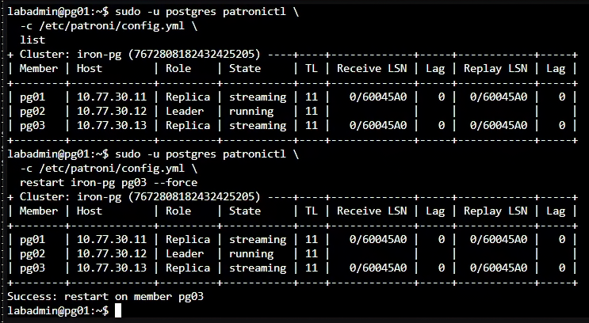
圖（七）重新啟動 pg03 後，叢集維持一台 Leader 與兩台串流中的 Replica，Lag 為 0。
等待 pg03 也恢復為 Replica / streaming。接著把 Leader 從 pg01 Planned Switchover 到已完成 Restart 且 Lag 為 0 的 pg02：
sudo -u postgres patronictl \
-c /etc/patroni/config.yml \
switchover iron-pg \
--leader pg01 \
--candidate pg02 \
--force
sudo -u postgres patronictl \
-c /etc/patroni/config.yml \
list
確認 pg02 已成為 Leader、pg01 已成為 Replica / streaming 後，Restart 原 Leader：
sudo -u postgres patronictl \
-c /etc/patroni/config.yml \
restart iron-pg pg01 --force
sudo -u postgres patronictl \
-c /etc/patroni/config.yml \
list
最後必須看到一台 Leader、兩台 Replica / streaming，三台都沒有 Pending restart。接著在 pg01、pg02、pg03 各自執行下列命令，透過本機 Unix Socket 查詢該 PostgreSQL Instance 實際載入的 Archive 設定：
hostnamectl --static
sudo -u postgres psql \
-X -d postgres -P pager=off \
-c "SELECT current_setting('archive_mode') AS archive_mode,
current_setting('archive_command') AS archive_command,
current_setting('restore_command') AS restore_command,
current_setting('archive_timeout') AS archive_timeout;"
本 Lab 維持既有 HBA 限制，並在三台節點各自透過本機 Unix Socket 查詢。三台的 archive_mode 都必須是 on，另外三個值也必須與本節設定一致。Dynamic Configuration 顯示的是預定設定，實際查詢結果才能確認需要 Restart 的參數已載入。任一台顯示 off 時，請先以 patronictl restart 完成該成員的 Restart，再執行 check 或 backup。stanza-create 成功只確認 Stanza 已建立；修正 Archive 參數後無須重建 Stanza。
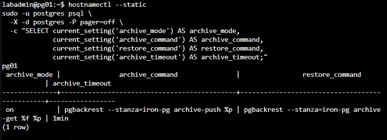
圖（八）節點實際載入 archive_mode=on、pgBackRest Archive Push／Get 命令與 archive_timeout=1min。
7. 建立 Stanza 與 Full Backup
操作順序：先在 backup01 建立 Stanza 與 Full Backup，再到目前 Patroni Leader 切換 WAL 並檢查 Archive。
在 backup01：
sudo -u pgbackrest pgbackrest --stanza=iron-pg stanza-create
sudo -u pgbackrest pgbackrest --stanza=iron-pg check
sudo -u pgbackrest pgbackrest --stanza=iron-pg --type=full backup
sudo -u pgbackrest pgbackrest --stanza=iron-pg info
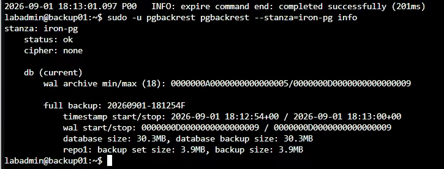
圖（九）iron-pg Stanza 狀態為 ok，並列出完整備份及其 WAL 起訖範圍。
在目前 Primary：
sudo -u postgres pgbackrest --stanza=iron-pg check
sudo -u postgres psql -c 'SELECT pg_switch_wal();'
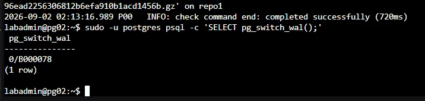
圖（十）pgBackRest Check 成功後，Primary 以 pg_switch_wal() 主動完成目前 WAL 區段。
Repository 中應看到 Backup Set 與 WAL 範圍。只看到 backup command end: completed successfully 還不算完成，必須做還原。
8. 建立誤刪時間點
操作順序：先找出目前 Leader，再於該 Leader 建立測試資料、記錄時間、執行誤刪。
在任一 PG Node 先確認目前 Leader：
sudo -u postgres patronictl \
-c /etc/patroni/config.yml \
list
進入目前顯示為 Leader 的節點 Console，先建立本次測試專用的 PROOF_ID，再使用本機 Unix Socket 開啟管理 Session：
hostnamectl --static
PROOF_ID="day28-$(date +%Y%m%dT%H%M%S%z)"
printf 'PROOF_ID=%s\n' "$PROOF_ID"
sudo -u postgres psql \
-X -d appdb -v ON_ERROR_STOP=1 \
-P pager=off -v proof_id="$PROOF_ID"
在 psql 中切換成 app_owner 後建立測試資料：
SET ROLE app_owner;
CREATE TABLE IF NOT EXISTS app.pitr_demo(
id bigint GENERATED ALWAYS AS IDENTITY PRIMARY KEY,
note text NOT NULL,
created_at timestamptz DEFAULT clock_timestamp()
);
INSERT INTO app.pitr_demo(note) VALUES (:'proof_id')
RETURNING id, note, created_at;
SELECT clock_timestamp() AS restore_target_time;
RESET ROLE;
SELECT pg_walfile_name(pg_current_wal_lsn()) AS target_wal;
SELECT pg_switch_wal();
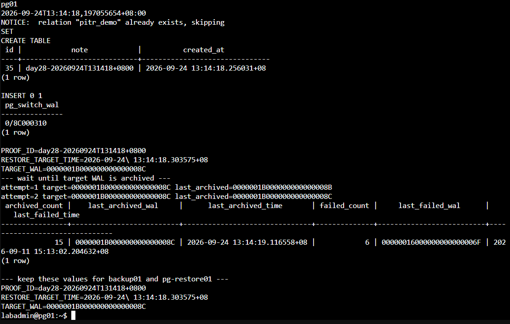
圖（十一）同一次操作建立唯一 PROOF_ID、記錄復原目標時間與目標 WAL，並確認該 WAL 已封存。
保存 PROOF_ID、restore_target_time 與 target_wal。restore_target_time 要保存查詢結果中的完整時間戳，例如 2026-09-02 02:15:43.123456+08；不要只記錄日期、整點或欄位名稱。保持這個 psql Session，不要先執行 DELETE。在目前 Leader 的另一個 Console 查詢 Archiver：
sudo -u postgres psql \
-X -d postgres -P pager=off \
-c "SELECT archived_count,
last_archived_wal,
last_archived_time,
failed_count,
last_failed_wal,
last_failed_time
FROM pg_stat_archiver;"
last_archived_wal 必須等於剛才保存的 target_wal，或已經是它之後的 WAL；last_archived_time 必須是本次操作後的新時間。last_failed_wal 與 last_failed_time 是排錯線索；曾經失敗但後來成功時，歷史失敗欄位不會立刻清空，因此以較新的 last_archived_wal 與 last_archived_time 判斷最終結果。
接著在 backup01 執行 Repository 端檢查：
sudo -u pgbackrest pgbackrest \
--stanza=iron-pg check
必須看到 check command end: completed successfully。只有 Leader 的 pg_stat_archiver 已越過 target_wal，而且 Repository Check 成功，才能回到剛才保持開啟的 psql Session 執行誤刪：
SET ROLE app_owner;
DELETE FROM app.pitr_demo WHERE note = :'proof_id';
SELECT count(*) AS rows_visible_after_delete
FROM app.pitr_demo
WHERE note = :'proof_id';
RESET ROLE;
\q
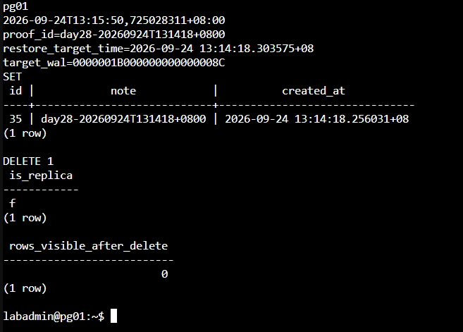
圖（十二）正式 Cluster 已刪除本次 PROOF_ID，條件查詢結果為 0 筆。
Day 25 的 HBA 只允許 Proxy 節點以 app_rw 與 app_ro 連線，沒有允許權限較高的 app_owner 從網路登入。不要為本節新增 app_owner HBA，也不要從 client01 經 DB RW VIP 使用該帳號。不要用模糊的「大約幾分鐘前」；保存含時區的完整 Timestamp。
9. 建立 Restore VM
操作位置：先在 PVE Web UI 建立全新的 Restore VM，後續還原指令只在該 VM 執行。
在 PVE Web UI 建立臨時 VM：
- 左側選 Debian 13 Template，按
More→Clone。 Target Node選pve03、VM ID填904、Name填pg-restore01。Mode選Full Clone、Target Storage選 pve03 的local-lvm，按Clone。- Task 顯示
OK後，到 VM 904 →Hardware→Processors→Edit。 - Sockets 填
1、Cores 填2，按OK。 - 選
Memory→Edit，Memory 填2048 MiB、取消 Ballooning，按OK。 - 選 System Disk →
Disk Action→Resize，使最終容量為 16 GiB。 - 選
Network Device (net0)→Edit，Bridge 選vmbr1、VLAN Tag 填30、Model 選VirtIO、Firewall 勾選，按OK。 - 到
Cloud-Init，User 填labadmin、Password 填 Lab 管理密碼。 IP Config (net0)→Edit，IPv4 選Static，IPv4/CIDR 填10.77.30.21/24、Gateway 填10.77.30.1，按OK。- DNS Domain 填
lab.home、DNS Server 填10.77.30.1，按Regenerate Image。 - 到
Hardware→Add→Hard Disk。 - Bus／Device 選
SCSI、Storage 選 pve03 的local-lvm、Disk size 填16 GiB。 - 勾選
Discard與IO thread，按Add。 - 按
Start，再開啟Console。
這台 VM 不加入 Patroni／etcd，不接受 Application 流量。開機後先確認 DNS：
resolvectl status
resolvectl query deb.debian.org
resolvectl status 必須看到 DNS Server 10.77.30.1 與 DNS Domain lab.home。若缺少，執行：
sudo install -d -m 0755 /etc/systemd/resolved.conf.d
printf '%s\n' \
'[Resolve]' \
'DNS=10.77.30.1' \
'Domains=lab.home' |
sudo tee /etc/systemd/resolved.conf.d/10-lab-dns.conf
sudo systemctl restart systemd-resolved
sudo resolvectl flush-caches
resolvectl query deb.debian.org
確認解析正常後，再找出 16 GiB 空白 Data Disk：
sudo lsblk -o NAME,SIZE,TYPE,FSTYPE,MOUNTPOINTS,MODEL
以下假設空白磁碟是 /dev/sdb。請先以 lsblk 確認它是 16 GiB，且 FSTYPE 與 Mountpoint 都為空，再執行：
sudo wipefs -n /dev/sdb
sudo mkfs.ext4 -L pgrestore /dev/sdb
sudo mkdir -p /var/lib/postgresql
grep -q '^LABEL=pgrestore /var/lib/postgresql ' /etc/fstab || \
echo 'LABEL=pgrestore /var/lib/postgresql ext4 defaults,noatime 0 2' | \
sudo tee -a /etc/fstab
sudo systemctl daemon-reload
sudo findmnt --verify --verbose
sudo mount -a
df -hT /var/lib/postgresql
安裝與 Primary 完全相同版本的 PostgreSQL 18 與 pgBackRest：
sudo apt update
sudo apt install -y postgresql-common ca-certificates curl openssh-client
sudo /usr/share/postgresql-common/pgdg/apt.postgresql.org.sh
sudo apt update
sudo apt install -y postgresql-18 postgresql-client-18 pgbackrest
psql --version
pgbackrest version
版本與 pg01 相同後，停止套件預設 Cluster，確認 PostgreSQL 18 的上層目錄由 postgres 管理：
sudo systemctl disable --now postgresql
sudo install -d -m 700 -o postgres -g postgres /var/lib/postgresql/18
開啟 Restore VM 的設定檔：
sudo install -d -m 755 /etc/pgbackrest
sudo nano /etc/pgbackrest/pgbackrest.conf
貼上：
[iron-pg]
pg1-path=/var/lib/postgresql/18/restore
[global]
repo1-host=backup01.lab.home
repo1-host-user=pgbackrest
repo1-path=/var/lib/pgbackrest/repo
process-max=2
log-level-console=info
按 Ctrl+O、Enter、Ctrl+X 儲存，再執行：
sudo chown root:postgres /etc/pgbackrest/pgbackrest.conf
sudo chmod 640 /etc/pgbackrest/pgbackrest.conf
sudo -u postgres install -d -m 700 /var/lib/postgresql/.ssh
sudo -u postgres ssh-keygen -t ed25519 \
-f /var/lib/postgresql/.ssh/id_ed25519 \
-C 'postgres@pg-restore01' -N ''
sudo -u postgres cat /var/lib/postgresql/.ssh/id_ed25519.pub
複製這行 Public Key。到 backup01 執行 sudo -u pgbackrest nano /var/lib/pgbackrest/.ssh/authorized_keys，把 Key 貼到新的一行，按 Ctrl+O、Enter、Ctrl+X。
在 OPNsense 進入 Firewall → Rules，按 Add。Interface 選 LAB_INTERNAL、Action 選 Pass、Version 選 IPv4、Protocol 選 TCP、Source 填 10.77.30.21、Destination 選 BACKUP_NODE、Destination Port 填 22，Description 填 PITR restore VM to repository。按 Save 後將規則移到 Block LAB_INTERNAL to internal networks 上方，再按 Apply。不建立 backup01 主動連回 Restore VM 的規則。
回到 pg-restore01，加入 backup01 Host Key 並測試：
grep -qE '^10\.77\.40\.11[[:space:]]+backup01\.lab\.home([[:space:]]|$)' /etc/hosts || \
echo '10.77.40.11 backup01.lab.home backup01' | \
sudo tee -a /etc/hosts
getent ahostsv4 backup01.lab.home
sudo -u postgres ssh-keyscan -H backup01.lab.home \
| sudo -u postgres tee /var/lib/postgresql/.ssh/known_hosts
sudo -u postgres ssh pgbackrest@backup01.lab.home 'hostnamectl --static'
確認回傳 backup01 後才執行 Restore。先建立本次專用的還原目錄並記錄開始時間：
將下方 2026-09-02 02:15:43.123456+08 換成前面實際保存的 restore_target_time，不要直接照抄範例時間。
安全限制：
pg-restore01只用來讀取與驗證還原結果，不得產生新 Timeline，也不得把 WAL 寫回正式 Repository。以下 Restore 使用--target-action=pause，讓 PostgreSQL 到達目標時間後停在 Recovery；--archive-mode=off與啟動參數中的-c archive_mode=off則是兩道防護。不要將pause改成promote，也不要移除這兩個 Archive Mode 設定。
RESTORE_DIR="/var/lib/postgresql/18/day28-proof-$(date +%Y%m%dT%H%M%S)"
sudo -u postgres test ! -e "$RESTORE_DIR"
sudo -u postgres install -d -m 700 "$RESTORE_DIR"
sudo -u postgres pgbackrest --stanza=iron-pg info
RESTORE_START_EPOCH="$(date +%s.%N)"
sudo -u postgres pgbackrest --stanza=iron-pg \
--pg1-path="$RESTORE_DIR" \
--type=time \
--target='2026-09-02 02:15:43.123456+08' \
--target-action=pause \
--archive-mode=off \
restore
RESTORE_END_EPOCH="$(date +%s.%N)"
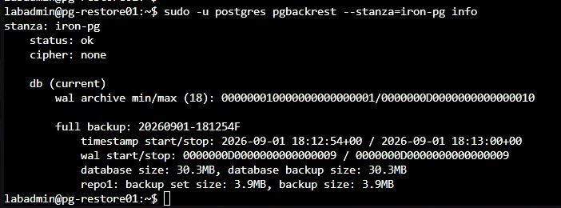
圖（十三）pg-restore01 已透過專用 SSH 路徑讀取 iron-pg Stanza、完整備份與 Archived WAL 範圍。
以獨立 Port 55432 啟動，不加入 Patroni。還原資料會保留正式 Cluster 的 TLS 與絕對 HBA 路徑；Restore VM 不複製正式 Server Private Key，而且只監聽 Loopback，因此啟動時覆寫這些設定。啟動命令再次強制關閉 Archive Mode，並使用 -l 將背景 Recovery Log 寫入檔案：
PG_START_EPOCH="$(date +%s.%N)"
sudo -u postgres /usr/lib/postgresql/18/bin/pg_ctl \
-D "$RESTORE_DIR" \
-l "$RESTORE_DIR/restore-startup.log" \
-o "-p 55432 -c listen_addresses=127.0.0.1 -c ssl=off -c archive_mode=off -c hba_file=$RESTORE_DIR/pg_hba.conf -c ident_file=$RESTORE_DIR/pg_ident.conf" \
start
for attempt in $(seq 1 60); do
recovery_state=$(sudo -u postgres psql \
-p 55432 -d postgres -Atqc \
"SELECT current_setting('archive_mode'),
pg_is_in_recovery(),
pg_get_wal_replay_pause_state();" 2>/dev/null || true)
if [ "$recovery_state" = 'off|t|paused' ]; then
echo 'PITR target: reached and paused; archive_mode=off'
break
fi
sleep 1
done
test "$recovery_state" = 'off|t|paused' || {
echo 'PITR target was not reached safely or timed out'
sudo -u postgres tail -n 80 \
"$RESTORE_DIR/restore-startup.log"
exit 1
}
TARGET_REACHED_EPOCH="$(date +%s.%N)"
PROOF_ID='請填入前面保存的 PROOF_ID'
sudo -u postgres psql \
-p 55432 -X -d appdb -v proof_id="$PROOF_ID" \
-c "SELECT id, note, created_at
FROM app.pitr_demo
WHERE note = :'proof_id';"
VALIDATION_END_EPOCH="$(date +%s.%N)"
awk \
-v restore_start="$RESTORE_START_EPOCH" \
-v restore_end="$RESTORE_END_EPOCH" \
-v pg_start="$PG_START_EPOCH" \
-v target_reached="$TARGET_REACHED_EPOCH" \
-v validation_end="$VALIDATION_END_EPOCH" \
'BEGIN {
printf "base_restore_duration=%.3f_seconds\n", restore_end-restore_start
printf "startup_and_wal_replay_duration=%.3f_seconds\n", target_reached-pg_start
printf "validation_duration=%.3f_seconds\n", validation_end-target_reached
printf "restore_to_validated_duration=%.3f_seconds\n", validation_end-restore_start
}'
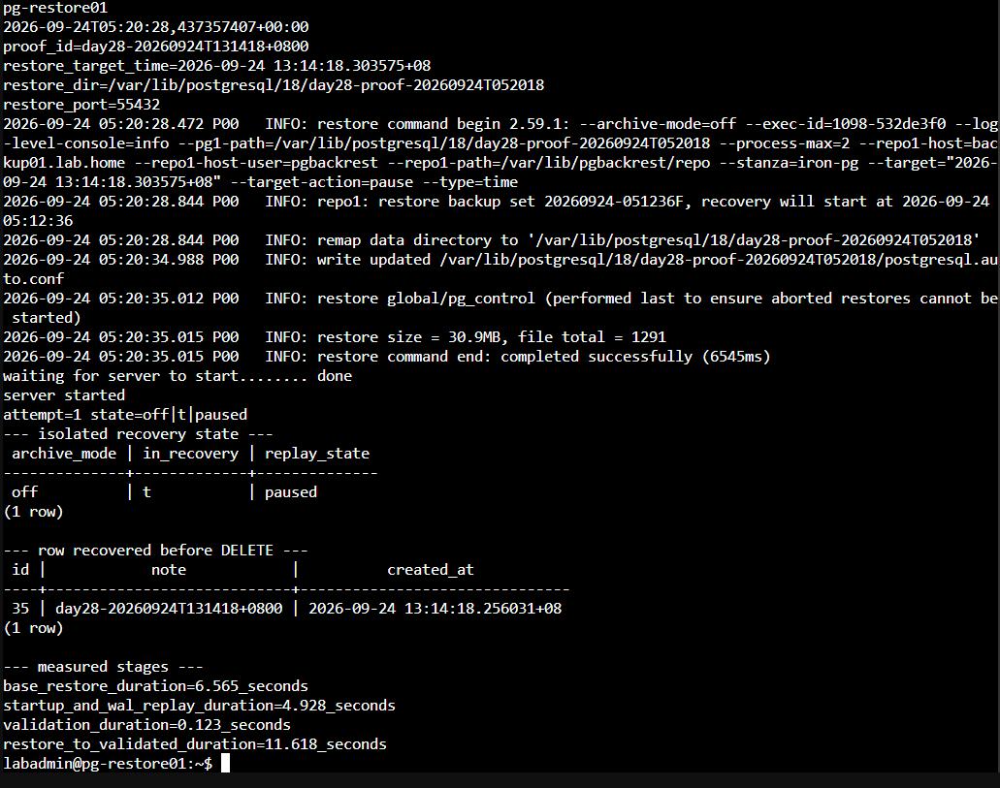
圖（十四）隔離 Restore Instance 維持 archive_mode=off 與 Paused Recovery，並找回相同 PROOF_ID。
預期可以查到相同的 PROOF_ID，表示這筆 DELETE 尚未在還原狀態中套用。此時 Restore Instance 位於 Recovery 並已暫停 WAL Replay，只提供唯讀驗證。驗證完成後立即停止，不要將它升級成 Primary，也不要把它加入正式流量：
sudo -u postgres /usr/lib/postgresql/18/bin/pg_ctl \
-D "$RESTORE_DIR" \
-m fast stop